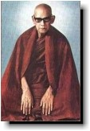

| BuddhaSasana Home Page | English Section - Read with Unicode CN-Times |
|  |
THE GREAT
DISCOURSE ON NOT-SELF Venerable MAHASI SAYADAW Translated from Burmese into English by U Ko Lay (Zeyā Maung) |
|
Note: Pali terms in this book are created with Unicode CN-Times font.
-ooOoo- PREFACE To Buddhist meditators the name of Mahasi Sayadaw needs no introduction. His meditation techniques and teachings have received recognition and acceptance all over the world. Now the Buddhadhamma Foundation is honored to present the Great Discourse on Not-self as the first in a series of teachings by this renowned teacher. The original translation by U Ko Lay, first published by the Buddha Sasana Nuggaha Foundation in Rangoon, Myanmar, has been further edited in this edition. Some repetition has been deleted and many of the Pāli terms have been translated. The teachings remain very detailed and repetitive, however: they were primarily given as instructions for people undergoing an intensive course of meditation. It is our hope that the publication of these books will help to further interest in the practice of meditation and Buddhist teachings in the West. Buddhadhamma Foundation -ooOoo- FOREWORD Within the personality of every worldling, or puthujjana, moral defilements (kilesa), such as greed and attachment, proliferate. These kilesa fix onto the objects arising through the six sense-doors, such as beautiful sights. While attachment occurs in respect of all things that are pleasant and agreeable, attachment to attā, (the concept of) a "living entity," or "self," is not only fundamental but also most difficult to dispel. Paccekabuddhas ("Silent Buddhas") are capable of eradicating their attachment to the concept of self unaided, through their own efforts and wisdom. However, they do not have the ability to eradicate this attachment in others. Only a person with the exceptional ability to convince others of the truth and virtue of the Four Noble Truths can, by so doing, wipe out these feelings of attachment in the hearts of others. Paccekabuddhas have no such knowledge or ability, that is why they become Paccekabuddhas. A Paccekabuddha enters Nibbāna alone. He is not omniscient and does not teach the Dhamma to others. Supreme Buddhas, the Omniscient Ones, are endowed with greater intellectual capacity than Pacceka-buddhas. Like the Paccekabuddhas, the Supreme Buddhas truly realize the Four Noble Truths on their own initiative, but they can also teach those truths to others. That is why they are Supreme Buddhas, Fully Enlightened Ones. The Lord Buddha delivered the First Sermon, concerning the Four Noble Truths, to the five ascetics. That sermon is called the Dhammacakkappavattana Sutta, the Great Discourse on the Setting in Motion of the Wheel of Dhamma, or Righteousness. This Great Discourse was the first teaching given by the Blessed One, and was delivered on the eve of Saturday, the full moon of July, exactly two months after His attainment of Supreme Enlightenment. At the close of this First Sermon, Koṇdañña, the leader of the five ascetics, became a Stream Enterer (Sotāpanna). By attaining the stage of Stream Entry he removed all doubts about the truth of the Dhamma and the misconception of sakkāya, "self" or living entity. Nevertheless, self-pride (māna) still lingered in his mind. The remaining four ascetics had not yet realized the special Dhamma, "the awakening of higher consciousness." As self-pride or personal ego still had its grip on Koṇdañña, and as Vappa and the other three of the Group of Five bhikkhus had not yet obtained the "pure and spotless Dhamma Eye," the Blessed One went on teaching and urged them to contemplate and note along the lines of vipassanā (insight meditation). After diligent meditation they all eventually reached the stage of Stream Enterer, thereby removing their attachment to self-view. Venerable Vappa gained progressive insight on the first waning day of July, Bhaddiya on the second day, Mahānāma on the third day, and Assaji on the fourth day. The Lord Buddha then summoned the whole Group of Five bhikkhus and taught them His second sermon, setting forth the famous anattā (not-self) doctrine. It was on Thursday, the 5th waning day of July. On hearing the Anattalakkhaṇa Sutta, all five attained Arahatship, by virtue of which they were entirely free from all human passions, including māna, conceit. The Anattalakkhaṇa Sutta, as its name implies, clearly expounded the doctrine of "not-self' as opposed to the false view of "self". The Anattalakkhaṇa Sutta is not a lengthy piece. In the original book published by the Sixth Buddhist Council, it covered only one page. In the Sutta, there is no mention of meditation methods or techniques for contemplation. The teaching was more concerned with natural truth than practical methods. Hence it would be difficult for those unacquainted with the methods of vipassanā meditation to appreciate the reality of not-self described in this Sutta. It was possible for the five ascetics only because the sermon was delivered by the Lord Buddha himself, and because they -- the listening audience -- happened to be of keen intellect. These five had not only been endowed with mature experience since hearing the Dhammacakka Sutta, but had also reached the stage of Stream Enterer. Thus their speedy attainment of Arahatship. During the lifetime of Lord Buddha, people with keen intellect and mature perfections (paramitā), like the Group of Five, achieved Path and Fruit (magga-phala) while listening to sermons by the Blessed One. Of course, these attainments were not gained without diligently practicing vipassanā meditation. The Special Dhamma was attained only because they had been able to devote themselves to ardent meditation, deep concentration and keen contemplation, and it was only those few with good knowledge or adequate past perfections who were capable of doing so. Many could not possibly contemplate and note with such great speed. Despite this fact, there are idlers who will knowingly say: "If one understand the nature of not-self through the teachings, it is not necessary to practice. One can achieve Path and Fruit merely by listening to the teaching." With this kind of wishful thinking they place themselves on the plane of the Noble Ones. Such concepts being entertained by a class of lazy-bones, the number of people who have so become self-made Noble Ones through simply listening to sermons would not be few. The kind of knowledge of not-self gleaned from listening to sermons without practicing vipassanā meditation is not a true, personal realization, but mere book-knowledge. If Path and Fruit insight knowledge (magga-phala-ñāṇa) could be realized in this manner, almost every Buddhist who knows the doctrine of not-self could be considered an Arahat. However, as such people do not have the virtues of Arahats, it is obvious that they are not really Arahats. Bearing in mind such improper notions, the Venerable Mahasi Sayadaw has given precise and clear instructions in this great Anattalakkhaṇa Sutta to put people on the right path. The Anattalakkhaṇa Sutta itself describes the nature and characteristics of not-self, but does not describe the meditation methods or techniques for contemplation and noting. This book, however, contains a full exposition of the methods of contemplation and explains in detail how not-self is reflected on, leading to the attainment of Nibbāna. The discourses were not taught willfully, without reference to the scriptural texts. Neither were they given without a foundation of personal experience in practical vipassanā meditation. They were expounded after acquiring personal experience and knowledge in meditation practice under the methodical instructions of a competent teacher, and after consultation with relevant Pāli Scriptures and Commentaries. In his sermons, the Venerable Sayadaw, with his deep compassion, elaborated fully on the brief account of the Anattalakkhaṇa Sutta given by the Lord Buddha. When the sermons were produced in typewritten copy, transcribed in full from the original tape recordings by U Thein Han, a retired judge, the manuscript was a lengthy piece comprising 420 pages. U Thein Han presented that typewritten copy to the Venerable Sayadaw to seek permission for printing and publication. The Sayadaw gave his kind permission to print and publish it only after summarizing it into a compendium of 152 pages, instead of the original 420, lest the book should become too bulky in view of the shortage of printing paper. Indeed, the Venerable Sayadaw is an adept at amplifying what is concise and shortening what is lengthy. He has not only abbreviated the lengthy version of the Anattalakkhaṇa Sutta and the "Method of Vipassanā Meditation", but also his teaching on the Dhammacakka Sutta. In doing so, he has made them comprehensible to all who might prefer to read or hear the Dhamma in a concise form, thus serving as a boon to all. Whenever he taught or wrote, the Venerable Sayadaw laid more emphasis on the true meaning rather than the principles of grammar. While the more literal translation of "Bārāṇasiyaṁ", as, "At Benares," is not incorrect, the Venerable Mahasi Sayadaw has translated it as "in the neighborhood of Benares", inasmuch as the Buddha resided temporarily in the Deer Park near the City of Benares (or rather in the province of Benares), in order to fall in line with the factual truth. Although he gave more importance to the inherent meaning, the Venerable Sayadaw did not adhere to it at the expense of grammar, the importance of which he never failed to observe. In other words, he gave grammar the attention it deserved, but paramount importance was given to the actual meaning. Hence, his interpretations do not strictly follow the traditional method. After due consideration, he would stick to the truth of the meaning as he found it and express his candid opinion in writing. The teaching of impermanence, suffering and not-self (anicca, dukkha and anattā) is very familiar to all Buddhists, and the words are never far from their lips. Whenever an accident happens, the words are casually muttered, quickly invoking mindfulness of the Dhamma. Such being the case, the teaching might be regarded as generally known and understood. It is undoubtedly known through hearsay or book knowledge, but in reality it is a difficult teaching to fully understand, despite its apparent simplicity. Of the three characteristics, the teaching on "anattā," not-self, is the most difficult and profound. It is for this reason that the Blessed One had to face serious opposition from such persons as Saccaka the Wanderer and Baka the Brahma, who entertained the opposite view of "self". Prior to the Buddha's teachings, it was considered that self was inherently interwoven with rūpa (corporeality) and nāma (mentality). In opposition to this wrong belief, the Lord Buddha stated that corporeality and mentality are not self. It is most difficult to convincingly show "not-self" as it is in reality, since the concept of self has been firmly rooted in people through countless rounds of existence. If the teaching of not-self could be easily known, there would be no need for the appearance of a Buddha. Nor would it be necessary for the Buddha's disciples, like the Venerable Mahasi Sayadaw, to expound on and write commentaries on the Anattalakkhaṇa Sutta at such great pains. The untiring efforts needed to elucidate this teaching stand witness to its profundity. Even among non-Buddhists, very few really understand what "self' or "attā" is, far less the teaching of "not-self." The worthy Venerable Mahasi Sayadaw has lucidly explained the doctrine in this Anattalakkhaṇa Sutta to bring those who hold wrong conceptions back to the right path. Once, when I first arrived at Wetlet Masoyein Monastery, the Venerable Sayadaw had gone to Wetlet town to deliver a sermon. While conversing with Sayadaw, I happened to ask him: "Might uccheda, the doctrine of extinction after death, and Nibbāna, which has a special feature, be construed as being the same?". To this, the Sayadaw replied, "Of course there is a difference. Nibbāna has its own quality and attribute. How could it not be special?" As the conversation ended abruptly, I had no chance to follow up with the question: "What is its special quality?" The Sayadaw might have forgotten this insignificant episode. However, when I was reading through this manuscript, I happened to recollect that conversation as I came upon the special explanation relating to uccheda and Nibbāna. On page 35 of this present text, a clarification is made of the difference between ucchedadiṭṭhi, the wrong belief that after death the existence of a being is completely annihilated, and Nibbāna. The believers of this false belief have erroneously thought that the annihilation of existence and Nibbāna are the same, but this is entirely wrong. The two are, in fact, entirely different. Regarding ucchedadiṭṭhi, about the year 1971, I managed to convene a congregation for hearing sermons on the Satipaṭṭhāna Sutta (the teaching on the Four Foundations of Mindfulness). I invited the Mahasi Dhammakatthikas U Samvara and U Zawtika to give my relatives and friends in my own native village the opportunity to hear some teachings. I had arranged for teachings to be given at Inchaung village, where many of my relatives were then residing. At this congregation, one Maung Kyi was present among the audience. This man, being a leader of the Red Flag Communist Party, was a staunch believer in the doctrine of no new life after the present one. It seemed that he had come over to join the congregation out of sheer courtesy, as he happened to be one of my relatives. U Samvara and the other teacher gave their sermons with his mental attitude in mind. Since the teachings had some sort of bearing on him, the audience of village folks was greatly interested. As this man was asked to assume the role of attendant at the time of delivering the Dhamma, it was no wonder that people were interested, knowing him well as a person who held the wrong belief in "No Future Existence." The next day, early in the morning, Maung Kyi appeared at a house where I had been invited for a meal offered by a donor. On that occasion, Maung Kyi told me "Sir, I accept the point of Dhamma touched upon by U Samvara last night, but please do not mistake it that I have become a convert, a believer in the doctrine of nāma (mind). Since you Buddhists believe in a next existence, your meritorious deeds are all performed out of your craving for existence. On our part, not having entertained with such a belief, we have no craving whatsoever for existence. We have extinguish all such clinging and attachment to existence". To this I remarked, "This would depend on one's view. According to Buddhism, desire and clinging to existence will only cease or be rooted out when one becomes an Arahat. Without being actually free of instinctive craving for existence, if one believes that existence is completely annihilated after death, one will go down to Niriya, the Nether World, in the next existence. With the false belief of uccheda stuck in ones mind on the eve of death, one would die with this consciousness. This is exactly in accordance with what the Lord Buddha has taught." Although Maung Kyi had severed his ties with his "life existence", his wife, not being able to do so, started making preparations for ordaining her grown-up children as novices (sāmaṇera). Plunged in his bigotry, Maung Kyi said to his wife, "You need not do anything in my favor for my next existence. If you prefer to perform the ceremony of ordaining the children into priesthood, you may do so on your own. But when the sāmaṇera-to-be are escorted to the monastery, I cannot possibly take the role of benefactor by carrying the big begging bowl and the fan." In retaliation to this statement, his wife said, "Without a benefactor, I cannot lead the would-be-sāmanera. If you cannot act as a benefactor, I will have to hire someone to act as benefactor and carry on with the performance of the necessary religious rites". Having heard this, Maung Kyi, the great believer of Uccheda Doctrine, became very perturbed and fidgety, and not being able to tolerate or accept the presence of a hired benefactor in his place, was said to have been put in a dilemma. I heard of this incident from the lay devotees of the village. I am fully confident that this great teaching on the Anattalakkhaṇa Sutta, will, like the other teachings given by the illustrious Mahasi Sayadaw, enhance the treasure of faith and bring about much benefit to all the reading public. U Teiktha -ooOoo- Top | Contents | 01 | 02 | 03 | 04 | 05 | 06 | 07 | 08 | 09 See also: Vietnamese Translation |
Source: Sakyamuni Meditation Center, California, U.S.A.
[Back
to English Index]
updated: 01-06-2002